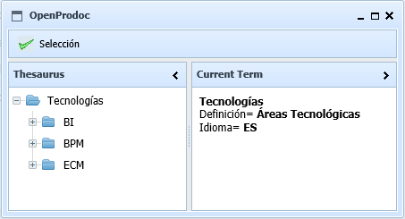

Seleccionar Término OpenProdoc
El menú de Selección incluye tres elementos (1 en Web).
- Seleccionar Término: Permite elegir un término cuando se establecen relaciones como USE, RT, o equivalencias entre idiomas.
- Mostrar Detalles: Activa o desactiva la presentación de la ficha completa del término.
- Mostrar Hijos: Activa o desactiva la presentación de los términos específicos y relacionados por cualquier criterio.

Índice Ayuda Tesauros